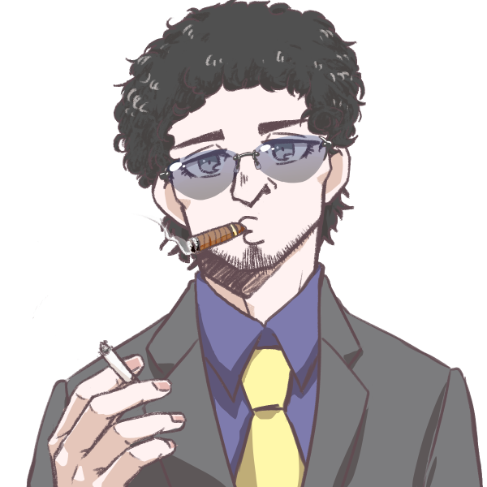
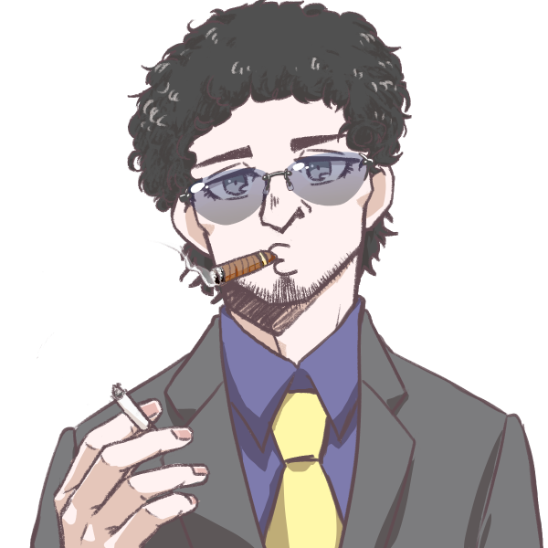
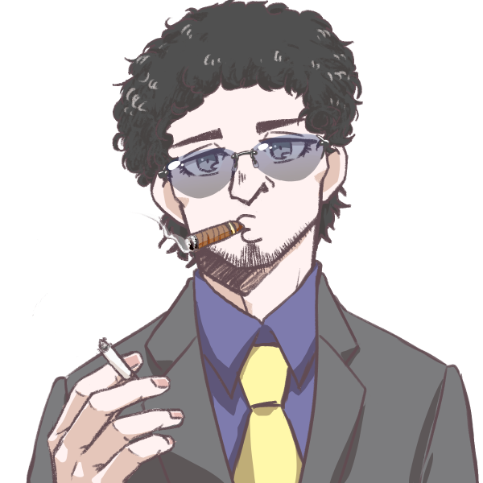

Carlos Piloto IV
Homem branco, alto, cabelo cacheado escuro, fumante, 25 anos.
Acrobacia: |Investigação: | Adestramento: |Luta: | artes: |Medicina: | Atletismo: |Ocultismo: 5 | Atualidades: |Percepção: 5 | Ciências: |Pilotagem: | Crime: 5 |Pontaria: 5 | Dipolmacia: |Profissão: | Enganação: |Reflexos: 17 | Fortitude: |Religião: 5 | Furtividade: |Sobrevivência: 5 | Iniciativa: |Tática: | Intimidação: |Tecnologia: | Intuição: 5 |Vontade: 5 | ------------------------------------------- Informações adicionais:
Contatos com o PARANORMAL: baixo Ultimo NEX registrado: 676-3(15%) Conhecimento sobre o oculto: mediano Nível de confiança: Leal Rituais portados: Dec/almENG/ConsMan Poderes paranormais: Surto temporal Conclusão de status = inserto
Ativ.realizada previamente: ExOcultista Conhecimento bélico: Armas leves Preparo físico: mediano Preparo mental: mediano Função = Exterminador Comclusão de status = capacitado Local de atuação = Corvus Equipe atual = I.S.A.C-3 Missão atual = loding..... Status = Ocupacionado
Itens em posse: Custos: componentes(amld) [2]| [ 5,0kg] R$ 11,90 Motoserra(mod) [1]| [ 7,0kg] R$164,99 UMP-45 [1]| [ 3,0kg] R$121,64 Bandoleira de couro [2]| [0,15kg] R$ 57,41 Caregadores(UMP-45) [3]| [ 2,0kg] R$ 75,30 Utencilio [1]| [ 0,2kg] R$132,00 Faixas(amld) [1]| [ 1,0kg] R$731,00 Peso total = 18,35 kg Custo total = R$ 1295,24
2
1
1
2
3
 
